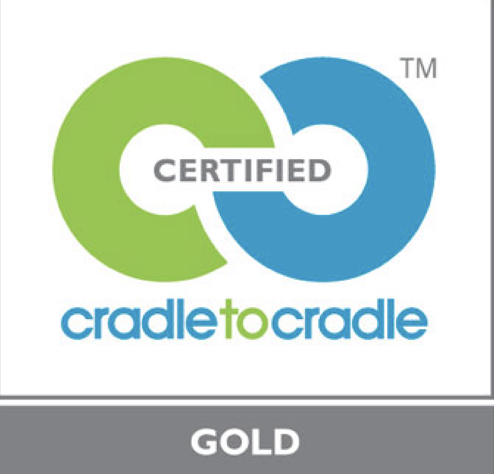

Sac bleu en crochet
100% acrylique
Sac en crochet – Une pièce durable et réutilisable
Ce sac en crochet a été confectionné à partir de chutes de pelotes récupérées auprès d’une personne basée en Suisse, qui revendait ces matériaux sur Le Bon Coin.
Les pelotes utilisées, notamment des marques Bravo, Chachaine, et Merck, sont composées à 100% d’acrylique et certifiées Oeko-Tex Standard 100.
Ce label garantit que les matériaux sont exempts de substances nocives pour la santé humaine et respectent des normes strictes en matière d'écologie et de durabilité.
Le fil, mesurant entre 3 et 4 mm, a été utilisé pour créer un mélange de points fautillage et classiques, offrant une esthétique unique et inspirée de la pré-collection.
Le label Oeko-Tex Standard 100, introduit en 1992, assure une sécurité optimale pour les textiles en contrôlant leur conformité à des critères rigoureux.
Les tests incluent des vérifications en laboratoire pour exclure des substances comme les phtalates, le formaldéhyde, et les colorants susceptibles de migrer.
Entretien
Pour prolonger la durée de vie de ce sac :
- Lavage à la main ou en machine à basse température (30°C).
- Séchage à plat pour éviter toute déformation.
- Évitez le repassage ou l’exposition prolongée au soleil.
- Des symboles d’entretien sont inclus pour vous guider.
Propositions pour la fin de vie
Ce sac a été conçu avec une approche durable et plusieurs options s’offrent à vous lorsqu’il arrivera en fin de vie :
- Défaire pour recréer : Défaites les mailles pour réutil La robe est conçue pour être portée toute l'année grâce à la laine Mérinos, qui régule la température corporelle. Elle peut être portée l'été pour sa légèreté et son confort, tout en offrant une certaine chaleur pendant les mois plus frais. ette longue robe, qui descend jusqu'aux chevilles, est dotée d'un décolleté élégant et de bretelles ajustables avec des attaches amovibles, permettant de faire un nœud pour personnaliser le style.


Et si vous vous amusiez un peu avec votre pièce ? Vous pouvez utiliser les trous de la dentelle comme passants, ajouter une ceinture pour ajuster la longueur, ou encore jouer avec les bretelles pour créer un tout nouveau look. Ce sont des idées simples et fun pour redécouvrir votre vêtement et le porter encore plus longtemps !" Fin de vie :


 ^
^
La fin de vie de cette robe est également pensée de manière responsable. Elle peut être recyclée ou transformée, contribuant ainsi à un cycle de vie circulaire et durable. Étant 100% laine Mérinos, ce vêtement est biodégradable. À la fin de sa vie, il peut être recyclé ou décomposé naturellement, contribuant ainsi à un cycle circulaire et respectueux de l’environnement.
COMPOSITION
Composition : 100% Laine vierge (Merino extrafine - mulesing free)Entretien de votre maille 100% laine


Lavage à 30°C, programme délicat.
Pas de séchage en tambour, séchage à l'air libre.
Repassage à 110°C max.
Nettoyage à sec, solvant standard ("P").
CERTIFICATION
Cradle to Cradle Gold
Sheep Friendly - no mulesing
